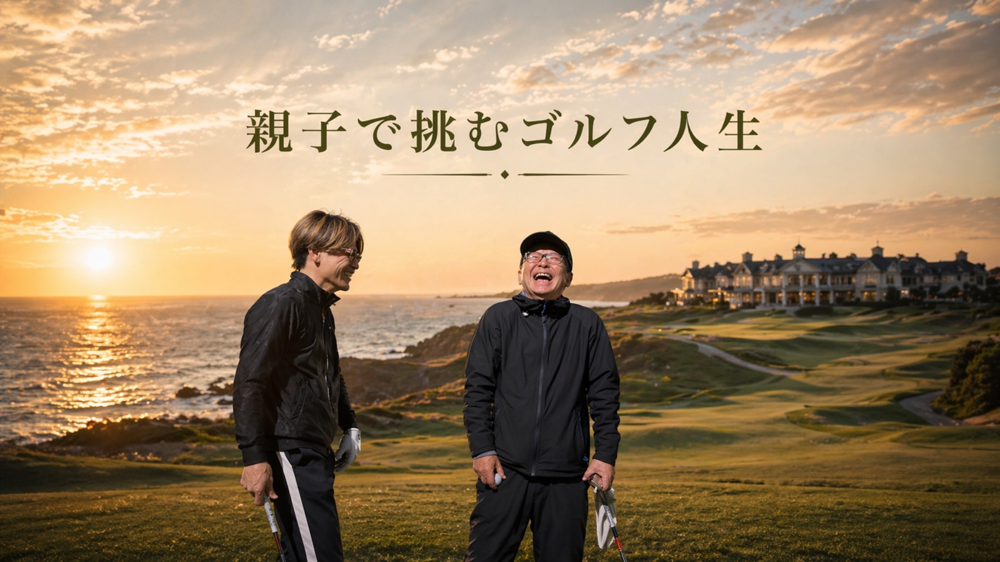

GOLFAMIについて
GOLFAMIは、福岡の親子2人で運営するゴルフチャンネルです。目的はシンプルで、親孝行がしたい。楽しくゴルフがしたい。ゴルフを楽しむ人を増やしたい。この3つだけです。
ここに並べる道具は、案件・自腹にかかわらず、動画の中で実際に紹介したものだけに絞っています。

先に、正直な話
ここは僕らの紹介リンクのページです。
どこで買っても、値段は同じ。
ここから買ってもらえると、
ショップから数％が僕らに届いて、
そのまま親子の夢の貯金になります。
同じ買い物なら応援になるので、
もし気になった商品があれば、
ここから購入してもらえたら嬉しいです。
応援、よろしくお願いします。
数は絞っています。動画で紹介した物だけ。
買ってくれたあなたは、この夢のスポンサーです
Next ── 次の夢企画
台湾トップアマとの親子真剣勝負。聖地への第一歩となる、初めての海外ラウンドです。
Goal ── 最終ゴール
ゴルフの聖地・セントアンドリュース。70歳の親父をこのチャンネルの収益で連れて行くのが、GOLFAMIの最終ゴールです。収益は全額、この夢のために貯金しています。
「親父とゴルフできるのも、
あと何年だろう」
だから記録に残す。収益で、親孝行をする。
GOLFAMIは、福岡の親子2人で運営するゴルフチャンネルです。目的はシンプルで、親孝行がしたい。楽しくゴルフがしたい。ゴルフを楽しむ人を増やしたい。この3つだけです。
ここに並べる道具は、案件・自腹にかかわらず、動画の中で実際に紹介したものだけに絞っています。